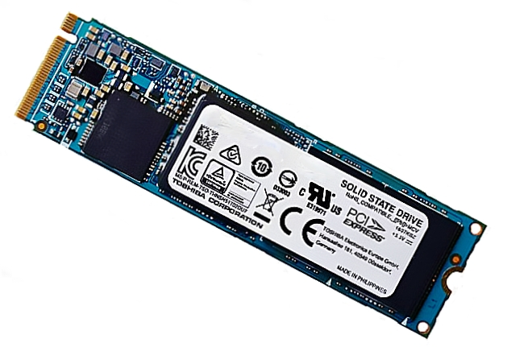

Note: One wrong step can lead to data loss, or installation in USB drive. It is advised to be mindful of all commands
This will help you in Partitioning the disks. It shows how different types of drives are labelled in Linux.


Any Drives which are connected using the SATA Cables show their names like shown below
sda
sdb
sdc
And if their partitions will be shown by numbers.
sda1
sda2
For example: Second SATA drive with the second partition will be shown as:
sdb2

Drives Connected to NVMe slot of your motherboard are shown as the following in Linux
nvme0n1
nvme0n2
And their Partitions get followed by p1, p2 and so on. So the 2nd NVMe drive with the
3rd partion will be written as:
nvme0n1p3